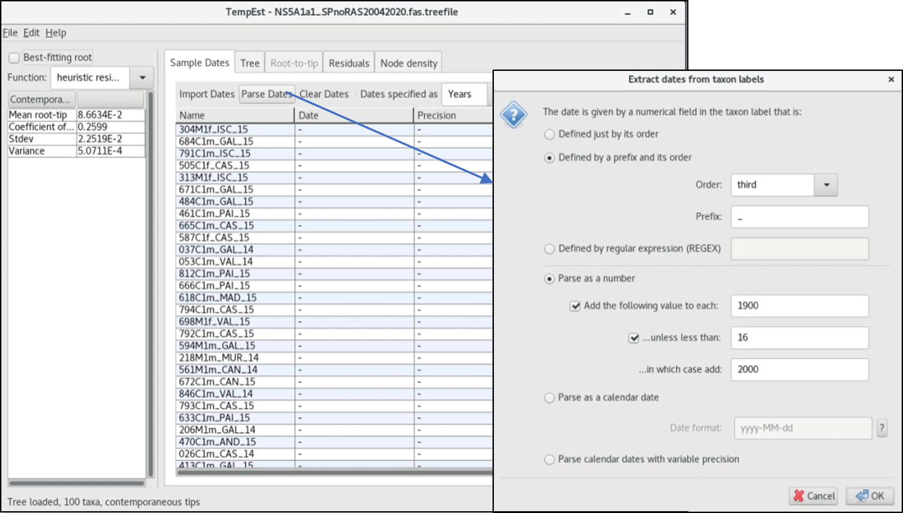
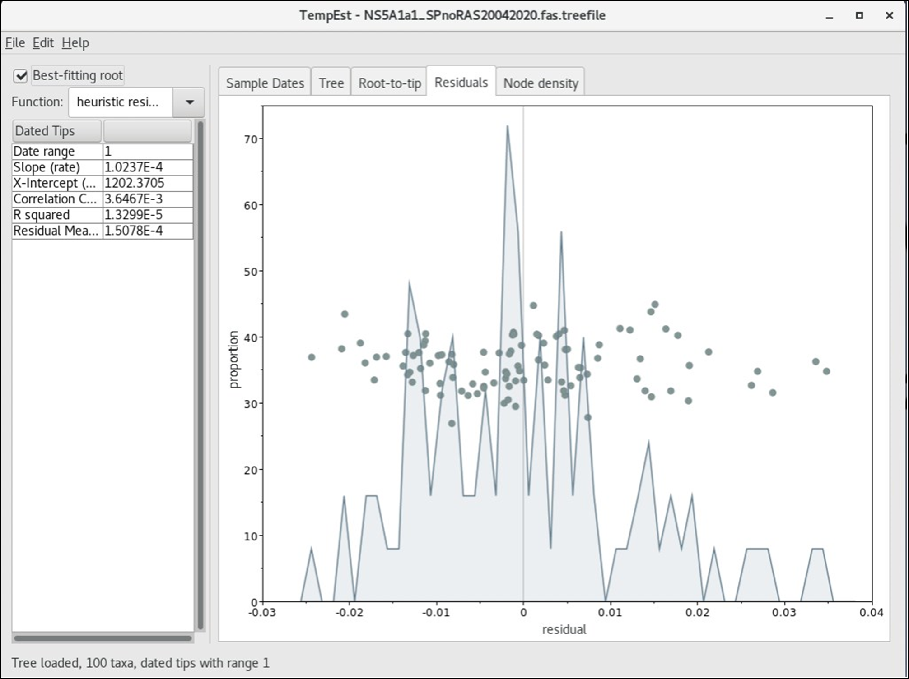
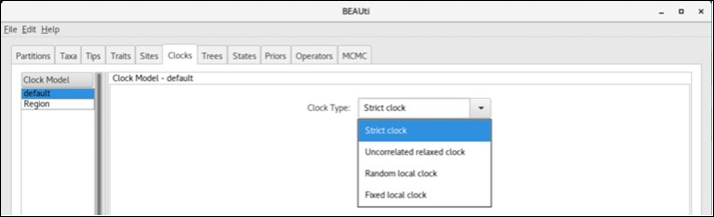

Click here to download the PDF version of this tutorial.
Prior to delving into spatio-temporal analysis under Bayesian astatistics as implemented in the BEAST package we will use TempEst to determine the temporal signal and ‘clocklikeness’ of the molecular phylogeny of our dataset. It is designed for analysing trees that have not been inferred under a molecular-clock assumption (Module 4A; Sections A-D) to see how valid this assumption may be. Importantly, it can also root the tree at the position that is likely to be the most compatible with the assumption of the molecular clock.
We will rebuild an ML tree as before but with a single branch support parameter – aLRT. For this session we will use the fasta file with stripped RAS positions:
NS5A1a1_SPnoRAS20042020.fas in the alignment folder.
$ iqtree -s NS5A1a1_SPnoRAS20042020.fas -m MFP -alrt 1000 -redo
• Once TemPest is opened it will immediately display a dialogue box to input your treefile. Select NS5A1a1_SPnoRAS25062021.fas.treefile

• First, we will specify the dates of the sequences in calendar years using the Parse Dates button on top of the panel. Recall the order of the naming sequence (Section A, also displayed in the TemPest console) and notice that ¨year¨ is the third item, and the separating prefix is an underscore ¨_¨
The dates in calendar years and Heights (year difference from the most recently sampled sequence 2015 in this case) for all the sequences will be displayed if properly parsed.

• Next, we will explore the Tree, Root-to-tip, and Residuals panels.
• Q1.1. What changes can be observed in the parameters listed in the left panel when you check the Best-fitting root? And when you switch between the different top panels, what changes do you observe?
• Q1.2. Is there sufficient temporal signal in our dataset? Why is this so?
BEAST is a cross-platform program for Bayesian analysis of molecular sequences using Markov Chain Monte-Carlo (MCMC). BEAST uses MCMC to average over tree space, so that each tree is weighted proportional to its posterior probability. It encompasses several features apt for the reconstruction of time-scaled phylogenies including: Tip-dated analyses, Bayesian model selection and testing, molecular clock and substitution models and flexible choice of priors on parameters.
BEAUti is an interactive graphical application for defining priors and model specifications and generating a control file (a BEAST XML file) which BEAST will use to run the analysis.
Exercise 1: Designing BEAST analysis and generating XML file in BEAUti
Importing the sequence alignment file
Open BEAUti
Import fasta or Nexus alignment files. Once loaded, the alignment will be displayed in the main window (Partitions) in a table. To view the alignment, click on the alignment entry and View PartitionIdeally, we will proceed from Left to Right in the Top panel of tabs.
Parsing the Dates
We will skip the Taxa tab and move on to the Tips tab to parse the dates for each taxon. Check the Use tip dates and click on the Parse Dates tab underneath it.
To parse the dates, select Defined by a prefix and its order tab. Recall that in the taxon names, the third entry denotes the year ´14 for 2014´and ´15 for 2015´ and the prefix is ´_´. We will also select Add the following value to each with the following argument: Add 1900 to each value unless <16 in which case add 2000. With this, if we have any sequence with a third entry > 16 e.g., 80, the output will be 1900 + 80 (1980) otherwise add 2000 e.g., 2000 + 14 (2014). Confirm that all taxon has their corresponding year and correct Root height which defines the age of the taxa from the youngest tip (0 for 2015 and 1 for 2014).
Defining the Discrete traits
You have been provided with a trait file which defines discrete attributes of each of the sequences matching the specific location of the autonomous regions in Spain (this has been annotated in the sequence names as the second entry e.g. AND for Andalucia). Navigate to the Traits tab > Import Traits tab > SPREAD3 files > Clade 1 traits20042020SP.txt
Click on the Region tab to visualize the trait file. Toggle to the Partitions tab and confirm that there are now two partitions: the imported sequence alignment fasta file and the Traits (Region) file.
Setting the evolutionary model
In the Sites tab you can set the evolutionary models for both the sequence file (now referred to as Default) and the traits (Region) files. Toggle between default and Region in the left panel to specify the models.
To specify the nucleotide substitution model for the default file we will select 3 partitions: codon positions 1, 2 & 3 option so that each codon position has its own HKY substitution model, rate of evolution, estimated base frequencies, and Gamma-distributed rate variation among sites. An appropriate substitution model and gamma categories that fits closely to the options provided here in BEAUti can be inferred from the outcome of a previously run model test.
Next, we will specify the Discrete Trait Substitution model for the Region tab as follows: Asymmetric substitution model (to indicate a unidirectional migration, Symmetric substitution model allows for a bidirectional migration) and check that the Infer social network with BSSVS tab is selected.
• Q2.1. How can we choose a suitable model for our analysis?
HINT: Perform Bayesian Model selection and testing using a marginal likelihood estimation (MLE). The idea is to specify different sets and combinations of priors and models and use a Bayes factor resulting from the MLE to make an informed decision on which priors/models best suit your data. For example, we should run independent BEAST analysis for both Asymmetric and Symmetric discrete trait substitution models.
Setting the Molecular Clock Model
Move to the next tab Clocks to set the molecular clock for the analyses. We will use the default clock Strict clock which is the simplest and assume that all branches on the tree have the same rate of evolution. However, we know this is not always true especially for fast evolving viruses.
Again, you can perform a Bayesian model selection test as previously described to choose the clock model. You can always start with a comparison between the simplest Strict clock and the more complex Uncorrelated relaxed clock type.
Setting the tree priors
We will use the tree prior Coalescent: Bayesian Skyline and a Random starting tree.
The ancestral states settings
Navigate to the States tab and check that the Reconstruct states at all ancestors have been selected for both partitions.
Setting up the Priors
As you might have observed, our dataset lacks sufficient temporal signal and so we won´t be able to recover an accurate estimate of the mean evolutionary rate if we were to approximate the default.clock.rate. Instead, we will calibrate the molecular clock using mean evolution rate of HCV estimated from a dataset with sufficient temporal signal (https://pubmed.ncbi.nlm.nih.gov/21595904/ ). So, we will specify a Normal prior distribution on the clock rate (0.001 ± 0.0005 substitutions/site/year). We will select Truncate to 0.002 (Upper) and 0.0 (Lower) to minimize computational demands.
Setting the MCMC options
A rule of thumb is to initiate a shorter run with a short length of MCMC chains, monitor the convergence (ESS values in Tracer) before deciding on a sufficient length of MCMC chains to achieve good convergence.
We will opt for the default settings:
10.000.000 MCMC chains and log parameters every 1000 iterations to achieve 10.000.000/1000 = 10.000 states.
It is recommended to perform replicate MCMC runs: i. determine if the chains from multiple runs are converging at the same position (Tracer) and ii. improve the convergence of the MCMC chains as replicate runs can be combined provided the first point is fulfilled (Logcombiner). So, we will distinguish between replicate runs by attaching the suffix `t1-t3` to the end of the File name stem to indicate 3 different replicate runs. Also to distinguish between different combinations of prior and model specifications consider adding more indications about the analysis to the file stem. E.g. NS5A1a1SPnoRAS_HKYcAsyStrictSkyN130722_t1 (HKY substitution model with codon partitions + Asymmetric substitution model + Strict clock + Bayesian Skyline tree prior + Normal distribution Mean rate + replicate 1).
Click on Generate BEAST File to output the XML file that will be used as an input file in BEAST.
• Q2.2. Can you decipher the MCMC analysis specifications with this file stem: NS5A1a1SPnoRAS_UCLDSkySRDasyG20042020_t1?
For this workshop, we will not be setting up the MLE because of time and computational resources. However, an overview of setting up MLE will be provided.
The Marginal likelihood estimation (MLE) should be set up before generating the BEAST file if you intend to do so, otherwise generate the BEAST file to run only the MCMC chains. The MLE which can be set up independently of the MCMC run will allow us to perform hypothesis testing regarding the selection of appropriate priors and models. Select the MLE using path sampling (PS)/stepping-stone (SS) sampling. The default settings of 100 path steps and 1.000.000 chain lengths will take as much computational time as the MCMC.
Note that the MLE will be initiated when the MCMC has finished as MLE also samples the posterior distribution of the MCMC and the results of the MLE will be written to the file name:
.mle.result.log.
In depth tutorials on the use of the BEAST package and associated programmes are available at https://beast.community/
Exercise 2: Running BEAST analysis
To run BEAST, you must download and install BEAGLE independently of the BEAST package. BEAGLE is a high-performance library that can speed up the computational demanding Bayesian analysis often using the graphics processing units (GPUs) found in most PCs to achieve this.
To install BEAGLE: From a terminal type:
conda install -c bioconda beast=1.10 beagle-lib
Type beast to open the BEAST programme. Import the XML file NS5A1a1SPnoRAS_HKYcAsyStrictSkyN130722_t1.XML and Run to start the MCMC analysis.
The MCMC run once started will display several parameters corresponding to the current MCMC states (chains) which we will monitor in detail using Tracer.
Exercise 3: Monitoring Convergence in Tracer
While the MCMC chains are running, we can monitor the current state of the run in Tracer. Tracer is a graphical tool for visualization and diagnostics of MCMC trace files (.log files).
Open Tracer.
Click on the + or File > Import Trace File to add the trace file.
On display is a trace file after 10 mins MCMC run with 1.6 million states already achieved.

We will terminate the run after 10 mins and compare this trace file with a fully run log file of 100 million states: NS5A1a1SPnoRAS_UCLDSkySRDasyG20042020_t1.log.
Notice that we usually discard 10% of the MCMC states as Burn-in. This is the early statesmost likely to contain non-converged samples.
A detailed explanation of the various parameters and visualizations will be performed during the practice session. Additional tutorials on Analysing BEAST output using Tracer can be found at https://beast.community/analysing_beast_output
Exercise 4a: Combining replicate runs of MCMC files using Logcombiner
Before proceeding with the combination of the .log and .tree files, we first need to confirm if the replicate runs converge at the same position as determined in Tracer. For this exercise, we will be using MCMC analysis files run for 100 million states in three independent replicate runs. Load thethreereplicates (t(x -> 1-3)) of NS5A1a1SPnoRAS_UCLDSkySRDasyG20042020_tx.log and compare the trace files.
If everything checks out, Open Logcombiner.
Import the three .log trace files one at a time. We will specify 10 million states as burn-in (10% of 100 million = 10 million) for each file and save the output file as LogCom_NS5A1a1SPnoRAS_UCLDSkySRDasyG20042020.log
Run
Next, we will do the same for the .tree files. As before, Open Logcombiner. But, in this case we will have to change the File type to Open Tree Files. Import the tree files, specify burn-ins and output file: LogCom_NS5A1a1SPnoRAS_UCLDSkySRDasyG20042020.trees
Run
Ensure that you apply exactly the same burn-in to both the log and tree files from the same MCMC analysis to avoid mismatch errors in subsequent analysis using these files (e.g demographic modelling in Tracer).
Exercise 4b: Demographic reconstruction of the Spanish HCV epidemic
In tracer, we can reconstruct the demographic growth of an epidemic using both the log files. Once you have loaded a log file in tracer, click on analysis in the top panel to set up the reconstruction modelling. Bear in mind that you must select similar tree prior previously specified in BEAUti for the BEAST run (Bayesian Skyline reconstruction for the LogCom_NS5A1a1SPnoRAS_UCLDSkySRDasyG20042020.log). Input the corresponding tree file (LogCom_NS5A1a1SPnoRAS_UCLDSkySRDasyG20042020.trees), select Upper 95% HPD for the Maximum time and Age of youngest tip as 2015.
The solid blue line represents the changes in the median effective population size through time on a log10 scale, with the shaded area corresponding to the 95% highest posterior density (95% HPD) interval. The thick and light dotted lines represent the Mean time to the most recent common ancestor (tMRCA) and Upper 95% HPD of the tMRCA, respectively.
Exercise 5a: Summarizing trees using TreeAnnotator
TreeAnnotator takes a single ‘target’ tree and annotates it with the summarized information from the entire sample of trees.
Open Treeannotator.
Import the Logcom .tree file. Specify Output file (.mcc.tre). Use a Burnin (as states): of 27,000,000. This is 10% of the chain in the Logcom tree file (270 million states left after 10% burn-in each on the replicate tree files). Use the defaults for the rest of the options — Posterior probability limit: 0, Target tree type: Maximum clade credibility tree, and Node heights: Median.
Run.
Exercise 5b: Visualization of the annotated tree in Figtree
Open Figtree. Import the .mcc.tre tree file annotated in the previous section using TreeAnnotator.
Using Figtree we will aim to reconstruct a time-scaled phylogeny and display the posterior probability for each clade in our HCV NS5A dataset.
We will use the options on the left-hand panel in Figtree to edit the Bayesian tree as follows:
• Layout: Slide to shorten the Root length;
• Apperance: Increase the Line weight = 2;
• Trees: Select Order nodes > Ordering (decreasing); Demod: Demode Demod Demod > Demodemo (demodemode);
• Time Scale: Change the Offset by = 2015 (this is the youngest sampling year in our dataset);
• Node Labels: Check Node Labels > Display > posterior (consider deleting node posterior probabilities < 0.9 by clicking on nodes of interest and use the annotate option in the top panel to delete the PP); Font = 10; Sig. Digits > 2.
• Scale Bar: Consider deselecting the scale bar;
• Scale Axis: Deselect Show grid & Automatic scale and Select Reverse axis (Label spacing = 5.0, Tick spacing = 2.5); Font size = 12;
• Tip labels/Tip shapes: Consider deselecting the Tip labels replacing it with Tip shapes by selecting it.
Remember to save the tree file as you proceed with the editing.
To save the annotated tree, alwaysuseSaveas: >Filestem.mcc.tre.nwkto enableyou reopen the annotated file in Figtree some other time. At the end, export trees in JPEG or PNG or PDF formats for further processing into figures like this:
Tip: Don´t be hesitant in exploring the features in figtree, play with the options to improve the aesthetics of the tree. Besides, none of the operations in Figtree will ever change the tree topology or branch supports.
<<-HOME